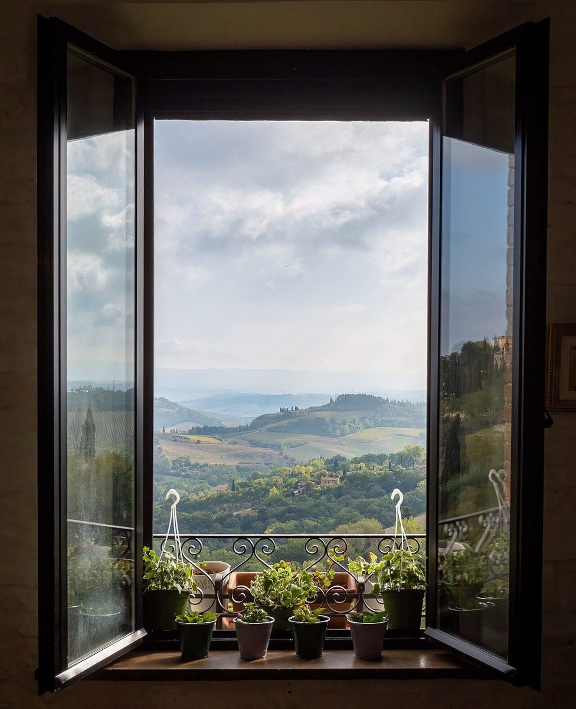

店のこと
店のこと
確認できているのは、所在地・電話番号・Instagramのアカウントだけです。
「想像してみる」部分は制作側の想像で、お店の実際の様子・考え・メニューとは関係がありません。
確認できていること
- 店名は「KOGANE TERRACE」、業種はカフェ
- 所在地は鳥取県境港市松ケ枝町23(〒684-0005)
- 電話番号は0859-57-7750
- Instagramのアカウント名は kogane.terrace_atelier
- 営業時間・定休日・メニュー・価格・ご予約・駐車場は準備中

想像してみる
「テラス」から思い浮かべた段
由来は分かりません。制作側は「テラス」という言葉から、段になった場所を連想しました。アカウント名にある「atelier」から何を提供しているのかは分からないため、ここでは断定しません。想像のなかの金色を、写真でそっと並べました(実際のお店の姿ではありません)。